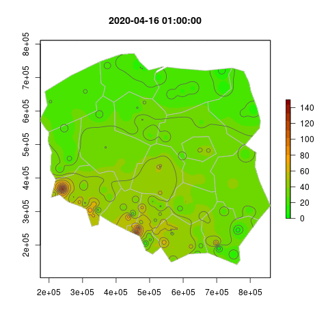

This is the result of a familiarisation task to use R with Application Programming Interfaces (API) queries and geospatial libraries.
2020-04-01
It aims at using publicly available data to estimate the air concentration in particulate matter 10 micrometers or less in diameter (PM10) in any place in Poland.
Air quality data were downloaded via an API query at powietrze.gios.gov.pl while the geographical shape data were downloaded via an API query at gisco-services.ec.europa.eu. The complete procedure is explained at https://fcacollin.github.io/Geo/.
The results include an interactive map based on leaflet added on
an OpenStreetMap layer.
As the data were available at hourly interval, some attempts where made to generate a 24 hour animated image.
